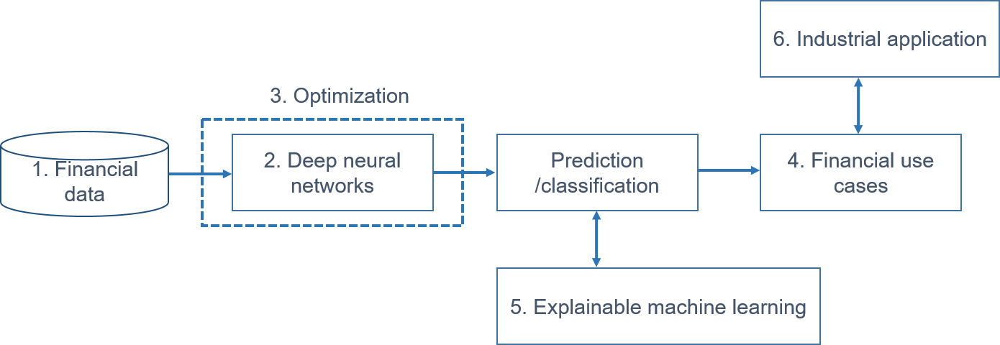

AI frontier in investment portfolio
Backgound
I would like to introduce some papers bridging deep learning and traditional
financial theories (especially in the field of investments),
hoping that the tecniques employed in them will be used as components
in developing new investment and risk management systems.
Content
The content consists of six stages:
1. data, 2. deep neural networks, 3. optimization, 4.financial use case,
5. explainable machine learning, and 6. industrial application.

1. Financial data
Technical indicator
-
Forecasting price movements using technical indicators: Investigating the impact of varying input window length(2017), Y. Shynkevich et al. [pdf]
Macroecnomic indicators
-
An Algorithmic Crystal Ball: Forecasts-based on Machine Learning(2018), J.-K. Jung et al. [pdf]
Fundamental indicators
-
Deep Learning for Predicting Asset Returns(2018), G. Feng et al. [pdf]
- Focus: It finds the existence of nonlinear factors which explain predictability of returns, in particular at the extremes of the characteristic space.
Multi-indicators
-
Discovering Bayesian Market Views for Intelligent Asset Allocation(2018), F. Z. Xing et al. [pdf]
- Focus: It proposes to formalize public mood into market views, because market views can be integrated into the modern portfolio theory. In the framework, the optimal market views will maximize returns in each period with a Bayesian asset allocation model. They use the data of capitalization, prices, volume, and sentiment and train two neural models to generate the market views, and benchmark the model performance on other popular asset allocation strategies.
-
Visual Attention Model for Cross-sectional Stock Return Prediction and End-to-End Multimodal Market Representation Learning(2018), R. Zhao et al. [pdf]
- Focus: Using the data of price-volume, historical return, technical indicators, and fundamental indicators, it applies a convolutional neural network over this market image to build market features in a hierarchical way. We use a recurrent neural network, with an attention mechanism over the market feature maps, to model temporal dynamics in the market.
2. Deep neural networks
2.1 Multi-layer perceptron
2.2 Recurrent neural networks
-
Deep learning with long short-term memory networks for financial market predictions(2018), T. Fischer and C. Krauss. [pdf]
2.3 Convolutional neural networks
-
Algorithmic financial trading with deep convolutional neuralnetworks: Time series to image conversion approach(2018), O. B. Sezer and A. M. Ozbayoglu. [pdf]
- Focus: It proposes a novel algorithmic trading model CNN-TA using a 2-D convolutional neural network based on image processing properties. In order to convert financial time series into 2-D images, 15 different technical indicators each with different parameter selections are utilized.
2.4 Autoencoder
3. Optimization
4. Financial use cases
4.1. Prediction: up/down, trend
4.2. Deep trading
4.3. Deep portfolio/deep factor
-
Applying Deep Learning to Enhance Momentum Trading Strategies in Stocks(2013), L. Takeuchi and Y.-Y. Lee. [pdf]
- Focus: It uses an autoencoder composed of stacked restricted Boltzmann machines to extract features from the history of individual stock prices. Its model is able to discover an enhanced version of the momentum effect in stocks without extensive hand-engineering of input features.
-
Deep learning with long short-term memory networks for financial market predictions(2018), T. Fischer and C. Krauss. [pdf]
-
Deep Learning in Asset Pricing(2019), L. Chen et al. [pdf]
-
Deep Factor Model(2018), K. Nakagawa et al. [pdf]
- Focus: It proposes to represent a return model and risk model in a unified manner with deep learning, which is a representative model that can express a nonlinear relationship.
-
Deep Learning in Characteristics-Sorted Factor Models(2019), G. Feng et al. [pdf]
-
Deep Recurrent Factor Model: Interpretable Non-Linear and Time-Varying Multi-Factor Model(2019), K. Nakagawa et al. [pdf]
-
Deep Learning Approximation for Stochastic Control Problems(2016), J. Han and Weinan E. [pdf]
- Focus: It develops a deep learning approach that directly solves high-dimensional stochastic control problems based on Monte-Carlo sampling and test this approach using examples from the areas of optimal trading.
-
Machine learning and the cross-section of expected stock returns(2018), M. Messmer [pdf]
- Focus: Modeling expected cross-sectional stock returns has a long tradition in asset pricing. It is motivated by shortcomings of classical portfolio sorting approaches and tackles the task with alternative methodologies including classical linear models and more advanced machine learning algorithms.
-
Empirical Asset Pricing via Machine Learning(2019), S. Gu et al. [pdf]
- Focus: It performs a comparative analysis of machine learning methods for the canonical problem of empirical asset pricing: measuring asset risk premia. Improved risk premium measurement through machine learning simplifies the investigation into economic mechanisms of asset pricing and highlights the value of machine learning in financial innovation.
-
Machine Learning and Asset Pricing Models (PhD Thesis)(2018), R. A. Porsani. [pdf]
- Focus: It incorporates statistical-learning techniques into the field of cross-sectional asset pricing.
-
Deep Fundamental Factor Models(2019), M. F. Dixon and N. G. Polson [pdf]
- Focus: It develops deep fundamental factor models to interpret and capture non-linearity, interaction effects and non-parametric shocks in financial econometrics, by constructing a six-factor model of assets in the S&P 500 index and generating information ratios that are three times greater than generalized linear regression.
-
Deep Learning for Forecasting Stock Returns in the Cross-Section(2018), Masaya Abe and Hideki Nakayama [pdf]
- Focus: It implements deep learning to predict one-month-ahead stock returns in the cross-section in the Japanese stock market and investigates the performance of the method.
-
Improving Factor-Based Quantitative Investing by Forecasting Company Fundamentals(2018), J. Alberg and Z. C. Lipton [pdf]
- Focus: They first show through simulation that if they could (clairvoyantly) select stocks using factors calculated on future fundamentals (via oracle), then their portfolios would far outperform a standard factor approach.
4.4 Deep Reinforcement
-
Deep Reinforcement Learning in Financial Markets(2019), S. Chakraborty [pdf]
- Focus: It explores the usage of deep reinforcement learning algorithms to automatically generate consistently profitable, robust, uncorrelated trading signals in any general financial market and develops a novel Markov decision process (MDP) model to capture the financial trading markets.
5. Explaining machine learning
-
A Unified Approach to Interpreting Model Predictions(2017), S. M. Lundberg and S.-I. Lee [pdf]
- Focus: It presents a unified framework for interpreting predictions, SHAP (SHapley Additive exPlanations). SHAP assigns each feature an importance value for a particular prediction.
6. Industrial application
-
Artificial IntelligenceJ.P. Morgan. more
-
J.P.Morgan's massive guide to machine learning and big data jobs in finance.J.P. Morgan. more
-
Quantitative investing and the limits of (deep) learning from financial data.J.B. Heaton [pdf]
7. Survey
-
Natural language based financial forecasting: a survey(2018), F. Z. Xing et al. [pdf]
- Focus: It clarifies the scope of natural language based financial forecasting (NLFF) research by ordering and structuring techniques and applications from related work.
-
Surveying stock market forecasting techniques – Part II: Soft computing methods(2009), G. S. Atsalakis et al. [pdf]
- Focus: It surveys more than 100 related published articles that focus on neural and neuro-fuzzy techniques derived and applied to forecast stock markets.
-
Computational Intelligence and Financial Markets: A Survey and Future Directions(2016), R. C. Cavalcante et al. [pdf]
- Focus: It gives an overview of the most important primary studies published from 2009 to 2015, which cover techniques for preprocessing and clustering of financial data, for forecasting future market movements, for mining financial text information, among others.